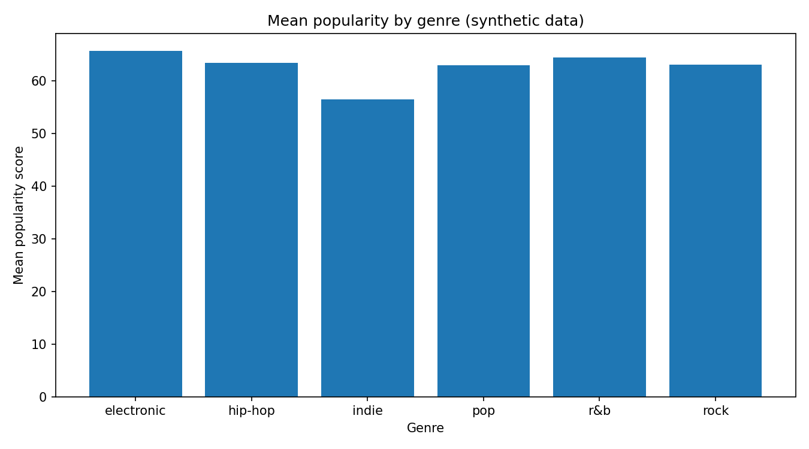

A reproducible Python data analysis project exploring music characteristics. All 120 tracks are synthetic examples, not actual Spotify records.
How does mean popularity differ across sample genres? Which tracks score highest?

Python analysis script · Sample CSV data · Documentation
Skills: Python, CSV processing, aggregation, data visualization.